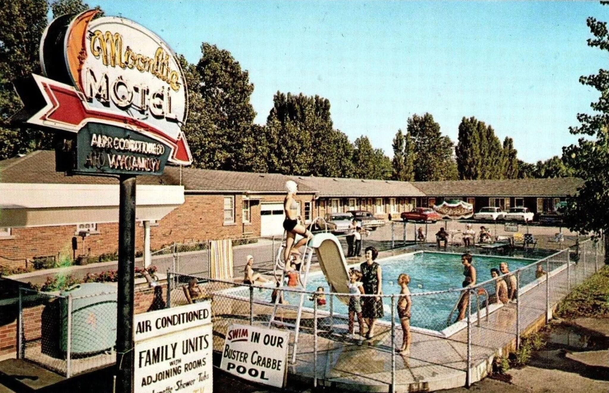

Adams Power Station

Inside Adams Power Station

Linde
Union Carbide division
North Tonawanda, Niagara County, NY

Electromet
Union Carbide division
Niagara Falls, NY

Hooker
Electrochemical Company
Niagara Falls, NY

Carborundum
Niagara Falls, NY


Atomic Niagara

 Leslie R. Groves · Director of the Manhattan Project
Leslie R. Groves · Director of the Manhattan Project
 Uranium tetrafluoride · “green salt” · U.S. Department of Energy
Uranium tetrafluoride · “green salt” · U.S. Department of Energy
 03
03
Uranium recovery
At Hooker, uranium-bearing slag was treated with acid; the unmonitored liquid waste went to the sewers.
Processing of uranium slag · Hooker · 1943–1945 Uranium metal rods · final product
Uranium metal rods · final product
 Uranium ore · Shinkolobwe, Belgian Congo · collected 1965
Uranium ore · Shinkolobwe, Belgian Congo · collected 1965
 From green salt to uranium metal
From green salt to uranium metal
Driven by the urgency of World War II and the atomic bomb project, this region became the nation’s leading center for processing and refining much of the uranium needed for the bomb. Many factories also operated laboratories, where scientists sought to maximize uranium yield by recovering it from leftover materials. General Leslie Groves cultivated close ties with regional factory owners, valuing their commitment to confidentiality and the protection of sensitive information. That secrecy exposed thousands of workers to radioactive materials. Niagara’s atomic role did not end with the war: it continued throughout the Cold War, including Bell Aerospace’s development of RASCAL, an early nuclear-armed standoff missile.
The process
-
Before the Manhattan Project, Linde’s ceramics business used uranium compounds to produce black, yellow, green, and brown salts for coloring ceramic glazes. This is the origin of the name Linde Ceramics. That chemical experience is also why the Army selected Linde for large-scale uranium separation.
Linde Air Products was a division of Union Carbide and Carbon Corporation. During the war, its Tonawanda plant processed high-grade uranium ore—much of it mined in the Belgian Congo—through three stages: ore into black uranium oxide (U3O8), black oxide into brown uranium oxide (UO2), and brown oxide into uranium tetrafluoride (UF4). The final product was the green, salt-like powder known as “green salt,” which was shipped by train to Electromet in Niagara Falls.
-
Electro Metallurgical Company, known as Electromet, was another Union Carbide company. Before uranium, its electric furnaces produced calcium carbide, ferroalloys, tungsten, titanium, and other specialty metals. This high-temperature metallurgical expertise made Electromet suited to convert green salt into uranium metal.
Workers mixed uranium tetrafluoride with magnesium inside a dolomite-lined steel vessel known as a “bomb.” When heated, the mixture underwent a violent thermite reaction. The uranium separated, pooled at the bottom, and was cast into 110–135-kilogram ingots, then recast into billets. The process left uranium-bearing C-1 and C-2 slag.
-
Before its uranium work, Hooker used Niagara’s cheap hydroelectric power to electrolyze salt into chlorine, caustic soda, and hydrogen. Its products included bleach, water-treatment chemicals, solvents, and other industrial compounds.
Under its Manhattan Engineer District contract, Hooker also manufactured fluorinated and chlorinated organic chemicals. One product, xylene hexafluoride, was known by the wartime code P-45. Although P-45 itself was not radioactive, its production generated waste hydrochloric acid.
Hooker used this acid in a separate uranium-recovery operation, treating C-2 slag delivered from Electromet’s uranium-metal reduction vessels. The slag consisted largely of magnesium-fluoride residue and spent dolomite liners—materials that still retained recoverable uranium. Workers opened and screened the barrels, separated uranium-rich pieces, conveyed the remaining material to digest tanks, treated it with acid, neutralized it with lime, filtered and washed the slurry, and rebarreled the concentrate. The process increased the uranium concentration from roughly 0.2 percent in the incoming material to approximately 1–2 percent in the resulting concentrate.
The recovered uranium concentrate was shipped by rail back to Linde in Tonawanda, where it reentered the production cycle—refined again into green salt and returned to Electromet for conversion into uranium metal. The process then began again.
-
Bethlehem Steel in Lackawanna and Simonds Saw and Steel in Lockport—the plant later known as Guterl Specialty Steel—formed the rolling and finishing stage of the regional uranium chain. Simonds became the program’s principal rod manufacturer, rolling uranium metal billets into long rods from 1948 through 1956. Bethlehem finish-rolled some bars rough-rolled at Simonds, heat-treated and ground uranium rods, and helped develop continuous-rolling methods later used at Fernald.
The finished rods were shipped to Hanford in Washington State, where they were cut and machined into short fuel slugs, canned, loaded into production reactors, and irradiated to produce plutonium for nuclear weapons.
-
In 1943, DuPont sent Carborundum ten unfinished uranium slugs—about thirty pounds of metal—to determine which abrasive wheels and grinding speeds should be used to finish reactor fuel. These centerless-grinding experiments supported the production of uranium slugs for the Clinton and Hanford reactors. The surviving records do not establish whether this work occurred at the Buffalo Avenue site or the Globar Plant.
Carborundum’s nuclear work expanded dramatically from 1959 through 1967 at its Central Research Laboratory on Buffalo Avenue. There, researchers developed uranium nitride, uranium carbide, and uranium silicide as possible alternatives to uranium dioxide and devised methods for synthesizing, forming, and testing these materials as reactor fuels.
Beginning in 1960, plutonium shipped from Hanford arrived at Carborundum for the AEC’s Carbide Fuel Development Program. Inside a classified fourth-floor laboratory, workers mixed uranium and plutonium compounds, heated them in furnaces, pressed and sintered the material, and ground it into experimental uranium–plutonium carbide fuel pellets. The program investigated fuels capable of longer burnups and higher power in advanced reactors.
-
At the same time, Bell Aerospace was developing the RASCAL, the United States Air Force’s first nuclear-armed standoff missile—an air-to-surface, supersonic guided missile designed to deliver a nuclear warhead.
Bell and the Atomic Energy Commission operated a test center north of Balmer Road on the former Lake Ontario Ordnance Works (LOOW), a 7,567-acre federal site in Lewiston and Porter originally built during World War II to manufacture TNT. The facility became known as the Bell Test Center.
In 1967, the site was temporarily used to house the Lewiston-Porter School while a new school building was under construction and scheduled for completion in 1970. During that time, 275 students, along with their teachers and administrative staff, attended classes at the site. This matters because children and staff were placed on a former military-industrial site where radioactive materials had already been stored and buried, without the site’s full history being publicly legible.
-
The Lake Ontario Ordnance Works was a vast U.S. Army industrial site constructed during World War II to manufacture TNT. After explosives production ended, the Manhattan Engineer District repurposed part of the site as its official regional repository for radioactive waste from Western New York’s uranium program. Beginning in 1944, residues and contaminated materials were brought there for storage, repackaging, burial, and disposal. Not all of the region’s waste reached LOOW; much of what did was concealed by secrecy, buried, and ultimately forgotten.
Love Canal & The Federal Connection Report

For decades, the waste left by this industrial system remained hidden. It began to surface only after the crisis at Love Canal. Love Canal was a working-class Niagara Falls neighborhood built around an unfinished canal that Hooker Chemical had used as a hazardous-waste landfill. From 1942 to 1952, the company buried more than 21,000 tons of chemical waste there.
In 1953, as Niagara Falls struggled to accommodate its growing postwar population, Hooker sold the covered landfill to the Niagara Falls Board of Education for one dollar. The deed disclosed the presence of industrial waste and included a liability disclaimer. Despite that warning, the 99th Street School was built on the middle third of the landfill, and the surrounding area was developed with homes and low-income apartments, many directly along the canal’s edges.

By the late 1970s, chemicals were surfacing in yards, basements, sewers, and school grounds. Residents reported cancers and other illnesses, while state investigators documented a significant excess of miscarriages among women living on 99th Street South and congenital malformations among children born in the neighborhood. One grandmother told an EPA official that two of her four grandchildren had been born with defects: a granddaughter was deaf and had a cleft palate, an extra row of teeth, and a cognitive disability; a grandson had an eye defect.
Lois Gibbs, who founded the Love Canal Homeowners Association, helped turn those private experiences into a national environmental crisis. Residents organized, protested, and forced state and federal officials to respond. Emergency declarations in 1978 and 1980 ultimately led to the evacuation of approximately 950 families. Love Canal became a major catalyst for the 1980 Comprehensive Environmental Response, Compensation, and Liability Act—the law that created Superfund—and its resident-led activism became a model for the modern environmental movement.
Love Canal itself was a chemical-waste disaster. But the Assembly inquiry began with eyewitness allegations that United States Army personnel had dumped toxic waste into the canal—and with questions about whether the Army’s own 1978 investigation had adequately examined those claims. To identify the soldiers witnesses remembered and determine what they might have been transporting, the Task Force had to reconstruct the history of federal defense activity across Niagara and Erie Counties.
That search expanded far beyond Love Canal and revealed that the region’s contamination was also radioactive. The Task Force traced the uranium-production chain through Linde, Electromet, Hooker, and other federal contractors; documented Linde’s underground disposal wells; and investigated the storage, burial, loss, and reuse of radioactive material at the Lake Ontario Ordnance Works and Lake Ontario Storage Area. The 1981 report concluded that Love Canal and federal involvement there were only the tip of a much larger system of factories, contractors, disposal sites, and radioactive waste.
View The Federal Connection report →Investigators entered Love Canal looking for one history of chemical disposal. The inquiry opened a second archive: a regional system of wartime uranium production and the movement, reuse, and disposal of its radioactive waste.
While the “sludge” was disposed of through waterways like creeks, wells, and the city’s storm drains, the solid waste, known as “slag,” piled up unsupervised and unaccounted for in factories and at the Lake Ontario Ordnance Works storage site. Unaware of the dangers, workers brought this material home and used it as filler for home improvements like paving driveways. Since it was free, readily available, and abundant in the area, construction and trucking companies began commercializing it and spreading it throughout the region, transforming a once idyllic city into a radioactive minefield and a cancer factory in the making.

Some of this radioactive material reportedly left LOSA as “rock slag.” Workers were permitted to use Atomic Energy Commission trucks to carry it home and spread it as fill in driveways and around their properties. The practice was so routine that one worker’s wife was asked whether her husband was “getting in on the gravy at LOSA.”
The Federal Connection Report
1944–1985
Lake Ontario Ordnance Works

The same secrecy and reckless handling that allowed radioactive slag to leave LOOW also left much of what remained scattered—and in places exposed—across the site for decades.
Radioactive waste began arriving at the Lake Ontario Ordnance Works in 1944. For the next four decades, it was stored across the former military site—in buildings, burial areas, drainage routes, open ground, and a concrete silo known as Building 434.
Building 434 held K-65 residues, waste left from processing exceptionally rich uranium ore from the Belgian Congo. K-65 and other concentrated residues made up less than six percent of the site’s contaminated material by volume, yet contained almost 99 percent of its radium-226. That concentration mattered: radium-226 has a half-life of about 1,600 years and produces radioactive radon gas as it decays. Nearly all of LOOW’s long-lived radium was therefore concentrated in a small fraction of its waste.
The K-65 residues remained in Building 434 for roughly 33 years, from 1952 to 1985. The silo was a converted water tower, not a purpose-built radioactive-waste repository, and its loading port was not capped and sealed until 1980.
In 1985, the Department of Energy moved the K-65 residues into the foundation of Building 411, demolished the silo, and consolidated its rubble with other contaminated material. In 1986, DOE completed the interim waste containment structure. Federal planning documents later estimated that the ten-acre structure contained approximately 193,230 cubic yards of radioactive residues and waste. Today, the 191-acre federally owned portion of former LOOW that contains the structure is called the Niagara Falls Storage Site (NFSS).
1981Radioactive deer near LOOW
Tests conducted for the Niagara Gazette found elevated cesium-137 and radium in the liver of a deer shot near LOOW. A separate study that year reported abnormalities in 15 of 20 deer captured nearby and elevated radium and cesium in four deer livers.
Federal responsibility Why is the Army Corps responsible?
Responsibility for NFSS changed again in 1997, when Congress transferred FUSRAP from the Department of Energy to the U.S. Army Corps of Engineers. Under that program, the Corps manages NFSS and eligible properties connected to former Manhattan Project and early Atomic Energy Commission work. It investigates the larger former LOOW property separately through the Formerly Used Defense Sites program because LOOW was once military property. The Corps is therefore responsible for this work because Congress assigned it these two cleanup programs—not because LOOW remains an active military base. Those authorities do not extend to every contaminated site in Niagara.
Containment has not ended the need for oversight. The U.S. Army Corps of Engineers continues operations, maintenance, security, and environmental surveillance to verify that the IWCS performs as designed. That monitoring matters because NFSS sits above several water-bearing zones: upper and lower soil aquifers and a weathered, fractured bedrock aquifer in the Queenston Formation. The lower soil aquifer flows northwest and discharges toward Lake Ontario, the Niagara River, local streams, and drainage ditches; the direction of flow in the upper aquifer has historically been less certain.
Beyond the containment boundary
NFSS occupies only part of the original LOOW property. After World War II, the federal government sold or transferred most of the remaining land, creating a patchwork of federal property, private businesses, homes, schools, farms, and waste facilities. According to EPA’s site history, the tract that became the Chemical Waste Management facility passed through several private owners before a Waste Management affiliate acquired it in 1984. CWM has operated the hazardous-waste facility there since 1988.
Former LOOW tractRadioactive fragments at CWM
The CWM property contains active and closed hazardous-waste landfills. A radiological survey found three radioactive fragments near the closed SLF-12 landfill. Laboratory testing detected radium-226, thorium-230, and uranium; Niagara County later identified the fragments as radioactive slag.
Former LOOW tractCesium-137 at Modern Disposal
Modern Disposal operates a separate solid-waste landfill on another former-LOOW tract. After an initial cleanup, a federal survey intentionally tested the places most likely to remain contaminated, so its results describe hotspots rather than average conditions across the property. The highest surface-soil sample contained 1,025 picocuries per gram of cesium-137—roughly 1,000 times the highest local background level measured by DOE. After more soil was removed, the highest remaining sample still measured 69 pCi/g: about 65 times local background and more than twice DOE’s later cleanup guideline of 33 pCi/g.
About 1.5 miles west of NFSS, the Lewiston-Porter school campus serves roughly 2,100 students from pre-kindergarten through 12th grade. The campus lies immediately west of the former LOOW boundary. A former 30-inch LOOW outfall line crossed school property. As part of its investigation of the former LOOW property, the Army Corps surveyed the school grounds in 2002. Readings above 8,000 counts per minute required further investigation. One rock behind the elementary school registered 38,222 CPM—nearly five times that trigger.
2008 health investigation Childhood cancer was approximately 80% higher than expected in the Lewiston-Porter School District. Read the findings
A 2008 New York State Department of Health investigation examined cancer incidence in communities surrounding NFSS and the former LOOW property. It found more cases than expected in several categories. Childhood cancer in the Lewiston-Porter School District was about 80 percent higher than expected, a statistically significant excess. The investigation could not identify a cause. It therefore cannot prove that LOOW or CWM caused the excess—but that limitation does not erase the excess the investigation recorded.
But this investigation revealed only a small piece of the larger story.
1979–2017
Following the radioactive trail
What decades of surveys revealed across Niagara

The IWCS contained only the radioactive waste that was still at LOOW in 1986. It could not contain material that had already left the site—or radioactive waste from factories that had never been sent there.
By then, radioactive slag had been carried away by workers, sold or given away, and reused as inexpensive construction fill across Niagara. Finding it required looking far beyond LOOW. Although the contamination was recorded in federal technical reports, the findings were not shared at the time with the people living or working at the affected properties.
The first regional surveys
The Department of Energy began by looking for elevated radiation, not by determining its source. EG&G surveyed the region from the air in 1978 and 1979. Oak Ridge National Laboratory returned in 1984 with vehicle-mounted detectors, then visited and sampled the locations it identified in 1985.
The investigation began with one federal hypothesis: hotspots along roads and properties might mark material lost from trucks carrying radioactive waste to LOOW. The ground investigation revealed a more complicated pattern. Some locations exceeded federal cleanup guidelines, while most of the remaining anomalies were associated with radioactive industrial slag.
The surveys therefore did not reveal one trail leading to one disposal site. They revealed overlapping waste histories: possible federal material associated with LOOW and radioactive residues produced by Niagara industries, some of which had been reused as construction fill.
Once industrial slag emerged as a separate source, the search could no longer be confined to suspected routes leading to LOOW. Later radiological surveys examined former factory properties and redevelopment sites, especially within Niagara Falls’s two principal industrial districts: the Buffalo Avenue corridor along the river and the Highland Avenue corridor beside residential neighborhoods.
Where were radiation levels elevated? The aerial survey mapped readings above the surrounding background. Follow-up work examined anomalies at homes, businesses, and roadside locations, but the readings alone could not identify who produced the material.
View the 1979 aerial survey →What was present at those locations? A vehicle survey identified 100 gamma anomalies for follow-up. Onsite measurements and soil sampling found that 38 exceeded FUSRAP guidelines; ORNL associated the other 62 principally with industrial slag. The findings were published in 1986.
View the 1985 field survey →More factories entered the record.
The 1981 investigation
The Federal Connection documented a federal uranium-production and waste network connecting Linde, Electromet, Hooker, and LOOW. It established the system, but it was never a complete inventory of every Niagara factory that handled radioactive material.
Worker-exposure records
Later NIOSH dose-reconstruction files documented radioactive processes and worker exposures at additional facilities. These records expanded the history of where radioactive materials were handled, but did not by themselves prove that a factory caused a particular offsite hotspot.
Surveys of former factory sites
Radiological surveys were also conducted at brownfields where factories had operated. These site investigations documented contamination at former industrial properties, including beneath roads, parking areas, and parcels being prepared for redevelopment.
These names do not represent one kind of evidence. Some appear in production or worker-exposure records; others were examined through later site surveys. Inclusion does not prove that a facility caused every nearby hotspot. Together, the records show why Niagara’s radioactive landscape cannot be explained by LOOW—or by any single factory—alone.
1979
The Union Carbide trail
Haulers, dumps, and radioactive fill
In 2016, Dan Telvock of the Buffalo-based nonprofit newsroom Investigative Post revisited Oak Ridge National Laboratory’s 1985 survey. He compared the locations where federal researchers had recorded elevated radiation with the properties later included in federal cleanup. Upper Mountain Road remained outside the program, along with dozens of other identified properties. Many of the people living or working at those locations had never been told what the survey recorded.
In 2017, Telvock published two private-investigator reports commissioned in 1979 by the owner of the Pine Bowl parking lot. Contractors told the investigator that Friona Trucking had hauled waste and slag from Union Carbide’s Niagara Falls property to the company dump, then known as Newco, and that untreated slag was sold or used as fill. Telvock also documented a 1965 state exemption allowing Union Carbide to bury radioactive waste on property later incorporated into the closed CECOS landfill.
The reports did not establish that Union Carbide slag had been used at Pine Bowl. They did, however, preserve a disposal history absent from federal cleanup maps: industrial waste moving from a factory through haulers, dumps, commercial sales, and possible fill sites.

2017–present
Greetings from Niagara
From photographs to a public archive

A warning became an investigation.
“It’s polluted—very polluted.”
Greetings from Niagara began independently in 2023, after Natalia Neuhaus spoke with her close friend Alex O’Malley about the place where O’Malley’s family had lived for four generations. The warning prompted Neuhaus to write her own 25-page report, Cancer Town: Unveiling Niagara Falls’ Radioactive Secret. That first report was how she began teaching herself Niagara’s industrial history, its role in the Manhattan Project, and the radioactive waste those industries left behind.
Neuhaus first photographed Niagara Falls from October 4 through October 7, 2023. The photographs recorded the tourist landscape, former factory districts, Love Canal, LOOW, and residents living beside places where federal surveys had measured elevated radiation. But the landscape could not answer the questions the photographs raised: what had been produced at each factory, where the waste had gone, which properties had been surveyed, and whether the people living or working there had ever been told.
At the Lewiston Public Library, Neuhaus found an original copy of Oak Ridge National Laboratory’s 1986 report on the mobile gamma survey of Niagara Falls. Its maps and tables connected radiation readings to roads, homes, businesses, and former industrial properties. The report became an entry point into a much larger record—not the conclusion of the investigation.
The research expanded through records that had never been read together.
NIOSH files
Dose-reconstruction reports and worker-exposure records identified additional factories, radioactive processes, materials, and periods of operation beyond the sites emphasized in The Federal Connection.
Sanborn maps
Fire-insurance maps, property records, and historical directories helped locate former plants, follow changing company names and boundaries, and connect factory grounds to the parcels that replaced them.
Surveys and brownfield files
Federal radiological surveys and later redevelopment files documented readings at former factories, roads, parking areas, and other sites where contaminated material remained or had been disturbed.
The investigation continued through Department of Energy and Army Corps records, state and federal cleanup files, environmental easements, historical maps, archival films, court arguments, newspaper archives, public meetings, academic research, and interviews. Neuhaus reviewed thousands of documents and archival pages; more than 800 source records are now linked through the project.
Factories appeared under different owners and names. Large industrial properties were divided, sold, and redeveloped. One location could reappear across decades in a production record, a worker-exposure file, a radiological survey, a brownfield investigation, and a cleanup document—without any agency assembling those fragments into one history. Reconstructing the landscape required cross-referencing names, addresses, parcel boundaries, dates, survey readings, waste routes, and later land uses.
The research became public because the official record never became a complete public accounting.
The 1986 Oak Ridge report recorded two very different outcomes. Of the 100 anomalies investigated on the ground in 1985, 38 exceeded FUSRAP guidelines and were associated with the suspected federal waste route. The report stated that those 38 had been remediated and that material above the guidelines had been removed. The other 62 were associated principally with radioactive industrial slag at asphalt driveways. Oak Ridge’s follow-up of this second group was a driveway investigation—not a comprehensive survey of parking lots, roads, yards, buildings, or the metropolitan area. Because Oak Ridge concluded that the driveway material was not connected to NFSS, those 62 anomalies were not included in the same federal cleanup.
Surveyed in the 1970s and 1980s. Cleanup was not completed until 2023.
The Department of Energy’s aerial survey recorded elevated radiation in the Upper Mountain Road area.
Oak Ridge’s vehicle survey and onsite follow-up measured the driveway anomaly at Upper Mountain Road.
EPA removed contaminated material from a culvert and portions of the gravel access road and replaced it with clean fill.
EPA excavated radioactive soil beneath basement areas and yards at two adjacent homes. Both families were temporarily relocated.
How many homes like Upper Mountain Road were ultimately cleaned? No agency has published a property-by-property reconciliation of Oak Ridge’s 62 driveway anomalies with every later investigation and cleanup. EPA’s current completed-site list documents work at four residences—two on Upper Mountain Road and two beside Holy Trinity Cemetery—plus the Upper Mountain Road access road. It also lists commercial properties on Niagara Falls Boulevard and Donovan Head Start. That is evidence of later cleanup, but it is not a complete answer for all 62 locations.
Construction kept finding what the 1985 survey had not mapped.
The 1984 mobile scan was not a parcel-by-parcel survey of the Niagara metropolitan area. Detectors followed accessible roads, and the 1985 fieldwork investigated the 100 anomalies selected from that route. As streets, parks, and buildings were later excavated, radioactive material continued to emerge outside that fixed set of locations.
New readings along a construction corridor
A radiological survey reported readings above 80 µR/h near the Aquarium of Niagara and the Park Police area, and a separate reading of 2,750 µR/h near the Whirlpool Bridge exit area.
Radioactive slag at the park entrance
Contractors exposed radioactive industrial slag while building the Prospect Point welcome plaza. Approximately 1,500 tons of compromised material were removed during the first cleanup.
Fill beneath a playground and parking lot
Radioactive material was discovered during a playground project in 2021. EPA later documented uranium-bearing slag beneath roughly 10,000 square feet and oversaw its removal in 2023.
These discoveries do not mean that every unsurveyed property is contaminated. They show why the 1985 findings cannot be treated as a complete map—and why residents should not have to reconstruct the history of a property from scattered technical reports after contamination is disturbed.
The Archive of Evidence makes the underlying records accessible rather than asking each new researcher or resident to begin again. The Interactive Map reconnects those documents to factories, disposal areas, survey boundaries, roads, waterways, homes, schools, and public spaces. Together, they show where the same places and unresolved questions return across decades.
In Niagara Falls, no site developed or redeveloped after the 1940s should be presumed free of radioactive fill without testing. The same applies to roads, driveways, and sidewalks.
The federal map was never the whole landscape.
For over eight decades, the government’s silence and the lack of a comprehensive plan to address radioactive contamination have proven deadly to the Falls.
Los Alamos National Laboratory became the public symbol of the Manhattan Project, but the bomb was the product of a dispersed national system of laboratories, refineries, metal plants, storage depots, transport routes, and disposal grounds. Beginning in 1974, the federal government reviewed more than 600 candidate facilities for the Formerly Utilized Sites Remedial Action Program. The program’s earlier accounting identified 46 sites requiring remediation; later additions brought the federal list to 55.
The thirteen Niagara Frontier sites are not all FUSRAP properties. That is precisely the problem. Some fall under FUSRAP, some under Superfund or the Formerly Used Defense Sites program, some under New York State cleanup and brownfield programs, and others sit outside any single comprehensive federal investigation. Together they form an exceptionally dense atomic-industrial landscape, but the government continues to divide that landscape by property boundary, legal authority, and source.
The government’s response to this environmental challenge remains a patchwork solution. The Army Corps conducts active FUSRAP cleanup; the Department of Energy assumes long-term stewardship of completed sites; EPA handles separate Superfund and removal actions; the former LOOW property is divided between FUSRAP and military-site authorities; and state agencies oversee still other factories, landfills, brownfields, and redevelopment projects. No one program is responsible for the whole geography.
Niagara Falls helped force a national response to hazardous waste. At Love Canal, Hooker Chemical had used an abandoned canal as a disposal ground before the surrounding working-class neighborhood became the symbol of a public-health disaster. The crisis helped drive the creation of Superfund. Yet the region’s radioactive legacy still remains divided across programs created to address individual sites rather than the movement of waste through an entire city.
The cancer burden that follows is documented. What the available studies have not established is whether—and to what extent—radioactive contamination contributed to it.